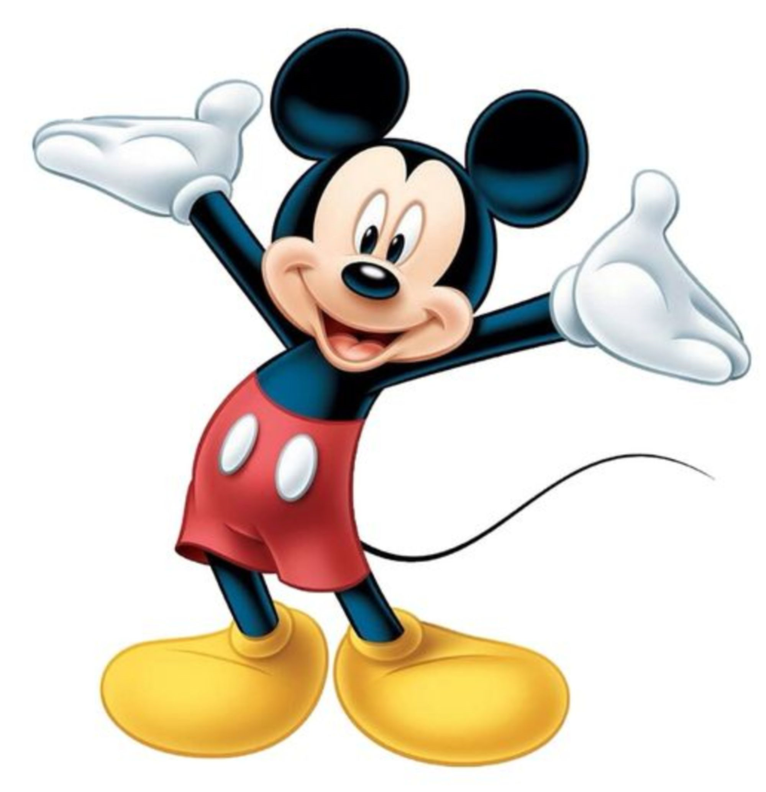

Пример: АСУ
Пример: Митинское шоссе, дом 35
Пример:
Пример:
function checkParent (src, dest) {
while (src != null) {
if (src.tagName == dest) return src
src = src.parentElement
}
return null
}
Цитата). Браузеры обычно выделяют текст внутри 'cite' курсивом.
Пример:
Игра Diablo уносит нас в мир тёмного фэнтези и основана на GURPS — универсальной системе ролевых игр, разработанной компанией Steve Jackson Games в 1986 году.
Пример:
Пример:
Пример:

Пример: Здесь могла бы быть Ваша реклама
Пример:
Пример:
Пример:
- для экранов ретина можно показывать картинку большего размера;
- выводить рисунки разного размера для мобильных и настольных устройств;
- отображать изображения разных пропорций, учитывающих ориентацию устройства;
- выводить изображение в векторном формате SVG, а для браузеров, его не поддерживающих, показывать PNG.
Синтаксис:
Пример:
Пожалуйста, подождите, фотографии загружаются.
Пример:
Съёмки фильма Полипропилен
История о том, как снимали фильм, где герои отдыхали на пляже, потом пришёл антагонист, избил протагонистов, сбросил их в бассейн, и что из этого получилось.
Хороший язык
История о том, как проходила студия изучения языка эсперанто, в то время, как над ней, на веранде велась студия приколистов, где травились анекдоты, и что из этого получилось.
Пример:
Проверка, поддерживает браузер JavaScript 1.3 или нет.
<script language="JavaScript1.3"> JS13 = 1;
</script>
<script language="JavaScript">
if (window.JS13) document.write("Ваш браузер поддерживает JavaScript
1.3");
</script>
В результате выполнения скрипта вы увидите текст Ваш браузер поддерживает JavaScript 1.3, в том случае, если браузер работает с версией 1.3.
Пример:
Информация об авторе
Бендер Родригез
Пример:
Спойлер
Убийца — дворецкий!
В HTML5 'tfoot' идёт после всех элементов
Синтаксис:
| ... |
|---|
Синтаксис:
| ... |
Пример:
Синтаксис:
Пример:
Температура воды
Синтаксис: Атрибуты: label - Устанавливает видимую метку для меню. type - Задаёт тип меню.
Значения: checked - Устанавливает, что команда выбрана. Используется в сочетании с типом checkbox или radio. default -Выбирает команду меню по умолчанию. disabled - Блокирует команду меню. icon -Адрес изображения, которое будет выводиться перед текстом команды. label - Название команды показываемое пользователю. radiogroup - Задаёт имя группы переключателей. type - Задаёт тип команды.
Пример: